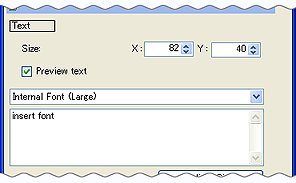
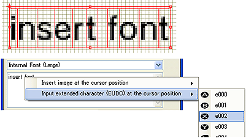
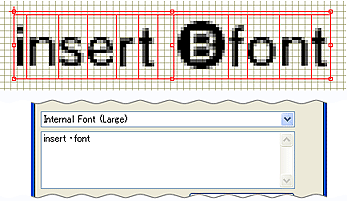

テキスト内に、外字を挿入できます。
外字を挿入するテキストオブジェクトを選択しオブジェクト編集ウィンドウを開きます。

テキストの外字を挿入したい場所にカーソルを合わせマウスの右クリックします。
[右クリックメニュー]→[カーソル位置に外字を入力]で、選択できる外字一覧が開きます。

表示された外字を選択すると、任意の外字がテキストオブジェクトに挿入されます。
挿入された外字は、テキストオブジェクトで確認できます。
※テキスト入力エリアでは正しく表示されません。
